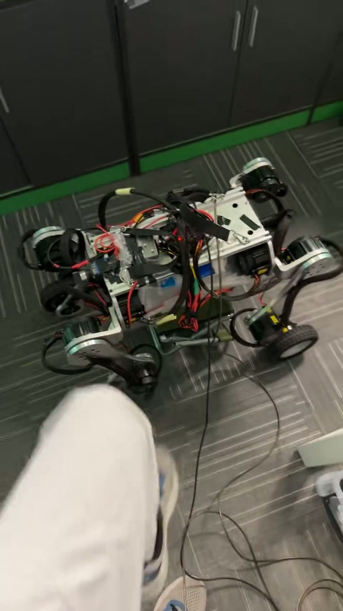

Mismatch is structured.
Mass, friction, actuator delay, joint offsets, static friction, gains, and coordinate conventions leave different signatures. Instrumentation should help distinguish them.
ROBOTICS RESEARCH · REAL-TIME CONTROL · SIM2REAL
I build locomotion systems at the boundary between learned policies, embedded control, and real hardware—and study what breaks when their assumptions stop agreeing.
How can learned and model-based robot controllers remain reliable when real-world dynamics, sensing, actuation, and timing depart from the assumptions used in simulation and planning?
RESEARCH POSITION
A policy may be correct for its simulator and still fail because the state is old, the action arrives late, the actuator model is wrong, or two devices disagree about which control epoch they belong to.
Mass, friction, actuator delay, joint offsets, static friction, gains, and coordinate conventions leave different signatures. Instrumentation should help distinguish them.
At 50 Hz policy inference over 500 Hz–2 kHz lower-level loops, observation age and action age alter the effective closed-loop dynamics.
A controller needs more than a point prediction. Calibrated confidence could determine when to continue, slow down, replan, or choose a lower-risk action.
CORE HARDWARE WORK
The projects are presented as a sequence: first, make distributed RL locomotion survive physical disturbances; then, trace model and actuator mismatch through a faster EtherCAT torque-control stack.

From simulation-stable PPO to real standing, rolling locomotion, stair behavior, and kick recovery through dynamics randomization, multi-rate integration, and observation-freshness safeguards.

A complete software and control path from an RL policy to 12 Profile-Torque drives, with diagnosis centered on actuator delay, static friction, model parameters, and desired-versus-measured joint motion.
THE EVIDENCE CHAIN
Oscillation after impact, delayed joint response, static friction, and command/measurement mismatch looked different on the machine than in the nominal model.
Timestamped epochs, shared-memory interfaces, desired/measured logging, motor-feedback freshness, and explicit policy tensor contracts made failures traceable.
The next question is whether a short-horizon predictor can estimate both current state and confidence, then let RL or MPC respond to the risk.
Estimate a short-horizon distribution over the robot state from recent observations, commands, action history, and timing metadata—then use calibrated uncertainty to change control decisions under stale sensing and delayed actuation.
RESEARCH FIT
ORL is a particularly strong fit because its work treats locomotion as a coupled problem in dynamics, optimization, adaptation, and physical failure—not as policy inference in isolation.
Personalized for Christian Hubicki / ORL. This module is isolated from the project evidence so the portfolio remains reusable for other PhD applications.